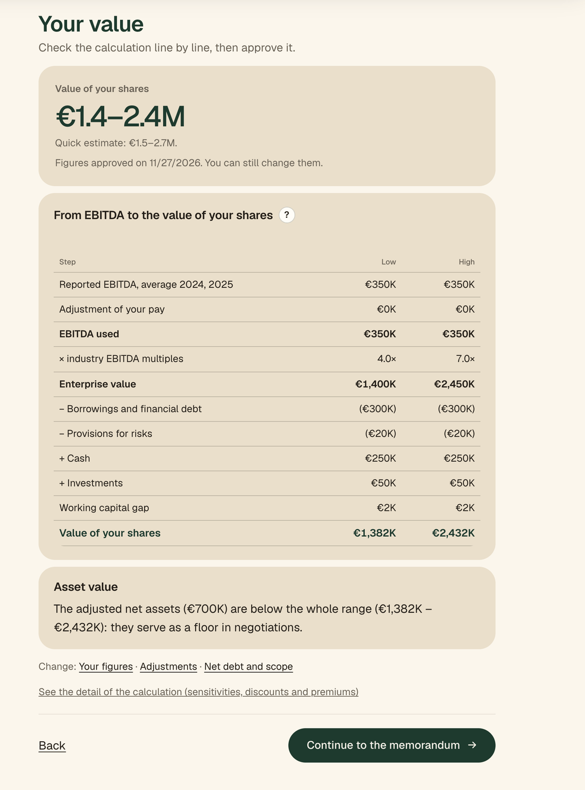
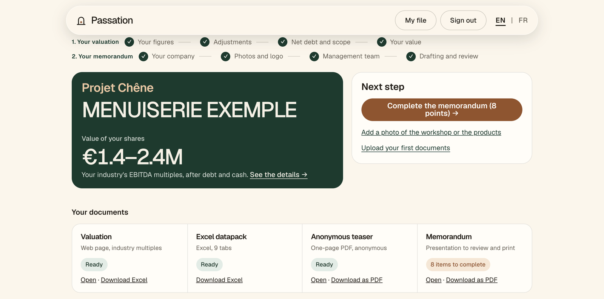

Preparing the sale of your SME, from the first estimate to the file handed to buyers
Business plan, 1 December 2026
Course "Programming and AI for Corporate Finance", EDHEC Business School.
Team: Eros Fragliola, Maxime Parrinello, Victoire Jacob, Ethan Barris, Mohamed Reda Aboualam (contributions in section 5.2).
This document was written with the help of Claude Code; the use of AI, the human checks and the errors found are recorded in AI-USAGE.md, at the root of the repository. Every figure has its source in the « Sources » appendix (section 10.2); estimates by the team are labelled as such.
Live product: https://passation.eros-fragliola-freedom.workers.dev · Code: https://github.com/Erosfragliola/passation
Passation is a web application that helps the owner of a French SME prepare the sale of their company. From the SIREN number (the French company ID) and a verified account, it gives a first value range drawn from public data. It then guides the owner to the documents a buyer expects: a valuation using several methods, an Excel datapack with checkable formulas, an anonymized teaser and an information memorandum.
The approach: code calculates, AI drafts, the owner approves. Valuations are deterministic, tested code, based on sourced and dated assumptions. Claude reads documents (tax return, website) and drafts text, but every amount read and every fact found must be approved by the owner.
Business model: the estimate is free; the owner then buys the Full Report (€850 excl. VAT) or signs a finder's mandate (Report free, 2% commission on the sale, at least €10,000). In the Base scenario of the financial model, revenue reaches €722,950 in year 3 (2029), of which 49.8% from commissions (section 4.4).
12-month goal: the goal of the financial model for 2027 (Base scenario, first year of the model): 105 Full Reports, 17 mandates, 1 completed sale, €119,250 of revenue. What we ask: no fundraising (the model has none: equity fundraising €0, share capital €10,000); partner chartered accountants for the pilot (section 9).
The size of the problem in France, according to the study by Bpifrance Le Lab with CCI France, CMA France and the C.R.A (« Transmission et reprise d'entreprise : perspectives de marché et facteurs clés de succès », November 2025), as reported by Bpifrance Création [1][3]:
The evidence of the problem comes from the Bpifrance study above. Two out of three possible transfers do not happen each year (26,000 completed against an annual potential of 74,000) [1], and at the current pace only 130,000 companies would be transferred in five years [3]. Preparation is where owners fall behind: 70% of those who plan a transfer more than a year ahead have not started, while 12 to 18 months are generally needed [1]. Passation addresses that preparation step: a first value and the documents a buyer expects, ready before the owner meets an advisor.
| Step | What Passation does | Safeguard |
|---|---|---|
| Quick estimate | SIREN or name → public card (business directory, INPI/BCE ratios, BODACC); once the account is verified by a code sent by email → value range based on the industry's EBITDA multiples | No amount sent by the server without a session; no figure without a sourced multiple and a positive EBITDA; API outage reported as such |
| Accounts | Reading of a PDF tax return by Claude, or entry of about ten amounts; automatic checks (balanced balance sheet, published revenue, unit, change) | Amounts proposed, never approved automatically; incomplete fiscal year left out |
| Valuation | EBITDA multiples, 5-year DCF (WACC, Gordon-Shapiro), ANCC (adjusted book net assets) as a floor, adjustments (owner, rent, one-off items), discounts, EV → equity bridge, sensitivities | Deterministic code; sourced, editable assumptions; out-of-range settings rejected |
| Datapack | 9-tab Excel workbook with live formulas | Formulas recalculated in tests and compared with the engine |
| Teaser | Anonymous presentation drafted by Claude from facts anonymized by the code | Anonymity check: name, city, SIREN, exact amounts, brands rejected |
| Memorandum | 9 chapters drafted only from approved answers, approved website facts, sourced market research | A chapter with missing information is flagged as such; a market fact is kept only if its source was actually consulted |


Checkable evidence: live application; 696 automated tests run again on every push (GitHub Actions); valuation cases whose expected values were calculated separately (Python reference, step-by-step recalculation); reconciliation with the published accounts (section 8); reproducible demonstration scenario with an entirely fictitious tax return.
Priority segment, a choice of the team deduced from the product and the sources, not from a statistic of our own: French SMEs with published accounts and a positive EBITDA, whose owner prepares a sale, with a sale value around the €1.5M used as the average deal value of the financial model (section 4.4). They belong to the 370,000 transferable companies and to the 40% of owners who intend to transfer within five years [1][3]; published accounts let the product give a first value from the SIREN alone.
Volume: about 74,000 transfers possible each year, of which 26,000 completed in 2024 [1].
Order of magnitude, an estimate by the team: 74,000 possible transfers a year × €850 excl. VAT (price of the Full Report) ≈ €62.9M a year. It is an upper bound for the Report alone (one Report per possible transfer, no commission). The 427 Reports of the Base scenario in 2029 represent about 0.6% of these 74,000 (427 / 74,000 = 0.58%). No public source on the usual cost and length of a sale mandate was found and opened; the only time reference retained is the 12 to 18 months of preparation [1].
| Solution | What it does | Public price | Difference with Passation | Source |
|---|---|---|---|---|
| Fusacq | Online platform of company sale and acquisition listings | Listing: free; priority display €2 excl. VAT per day; introduction €45 to €60 excl. VAT | Finds a buyer, does not prepare the valuation or the documents | [6], 27/11/2026 |
| Transentreprise (CCI and CMA network) | Listings of businesses for sale, through the seller's chamber of commerce or crafts advisor | Not public | Listing and advice by a person; no automatic valuation or documents | [7], 27/11/2026 |
| Manageo | Company valuation report based on the last published balance sheet | €129 excl. VAT | Valuation from public accounts only; no owner's adjustments, no teaser or memorandum | [8], 27/11/2026 |
| Nexco Expertise (chartered accountant firm) | Free online tool; valuation report; full valuation mission | Report €490 excl. VAT; mission €3,500 to €12,000 excl. VAT | A human expert, at a higher price; Passation prepares the file the expert can review | [9], 27/11/2026 |
| Hayot Expertise (chartered accountant firm) | Short-form valuation opinion or full valuation report | Opinion from €800 excl. VAT; full report from €2,500 excl. VAT (revenue below €2M) | Same as above | [10], 27/11/2026 |
| CCI Paris Île-de-France, « Accompagnement Premium Cession » | One-year support of the seller by the chamber of commerce | On quote (not public) | Human support; Passation is a tool for the owner and their advisor | [11], 27/11/2026 |
Differences specific to the product, which can be checked in the repository: valuation by tested code and not by a language model; sourced assumptions shown to the owner; Excel datapack with live formulas; automatically checked teaser; the four documents produced from the same approved figures.
Cost structure known to date:
| Item | Nature | Checkable fact |
|---|---|---|
| Hosting (Cloudflare Workers, D1, R2) | Free plan at the current stage | wrangler.toml, PLAN.md § 8 |
| Claude API (Anthropic) | Pay-as-you-go | Quotas: 60 processing tasks per day per user, 10 files per account (src/config.js) |
| Emails (Brevo) | Free plan, limited daily volume | PLAN.md § 8 |
Revenue model. The quick estimate stays free; the owner then chooses between two mutually exclusive options. Either they buy the Full Report (valuation, datapack, teaser and memorandum) for €850 excl. VAT, paid upfront; or they sign a finder's mandate: the Report is provided free, and Passation earns a commission of 2% of the sale price, with a minimum of €10,000, paid when the sale is signed.
All figures in this section come from the 36-month financial model business-plan-model.xlsx
(Summary tab, Base scenario unless stated otherwise). The model is the only source of these numbers; the online
version is free during the test phase (section 9).
Rates: Assumptions tab, Base column. Volumes: Summary tab. Reports, mandates and sales are rounded to whole units in the model (Drivers tab).
| 2027 | 2028 | 2029 | |
|---|---|---|---|
| Full Reports sold | 105 | 213 | 427 |
| Mandates signed | 17 | 34 | 68 |
| Completed sales (closings) | 1 | 6 | 12 |
| Revenue: Full Report sales | €89,250 | €181,050 | €362,950 |
| Revenue: mandate commissions | €30,000 | €180,000 | €360,000 |
| Total revenue | €119,250 | €361,050 | €722,950 |
| Gross margin | €117,613 | €357,729 | €716,293 |
| EBITDA | €107,233 | €334,809 | €683,173 |
| Net income | €84,675 | €255,357 | €516,630 |
| Year-end cash | €118,929 | €403,181 | €1,010,980 |
Summary tab, rows 9 to 38. The balance sheet check row (Balance Sheet tab) is zero in all three years.
| Scenario | Total revenue | Net income | Completed sales |
|---|---|---|---|
| Conservative | €48,450 | €12,276 | 0 |
| Base | €722,950 | €516,630 | 12 |
| Ambitious | €3,005,900 | €2,218,229 | 52 |
Values read in the model after switching the active scenario (Assumptions tab, cell B8); the file in the repository is saved with the Base scenario. In the Conservative scenario no sale closes in 2029, so revenue comes from Reports only.
| Item | Value |
|---|---|
| Expected value of a free estimate via the Report (2.5% × €850) | €21.25 |
| Expected value of a free estimate via the mandate (0.4% × €30,000 × 30%) | €36.00 |
| Expected value of a free estimate | €57.25 |
| Marketing cost per free estimate (year 1) | €1.42 |
| Marketing cost per Report sold (year 1) | €57.14 |
Summary tab, rows 44 to 51. As the model puts it: if the value of a free estimate exceeds its marketing cost, acquisition is profitable.
The same assumptions are written in the README of the repository (« Assumptions »). Amounts are in euros (EUR). Only French companies, identified by their SIREN, are covered. A fiscal year is a closed accounting year; at most three fiscal years are used, the latest one complete, the earlier ones kept for their income statement. Industry multiples are dated and sourced [13]; an industry without a sourced multiple shows no figure. The valuation assumptions (risk-free rate, risk premium, cost of debt, betas, corporate income tax, perpetual growth) are sourced and dated [14]. The MVP does no online payment, no matchmaking with buyers, no legal or tax advice, and does not cover foreign companies. The assumptions of the financial model are in section 10.1.
Desirable future state. In an organization that adopts the tool (the owner's company and the accounting or advisory firm that supports it), the preparation of a sale changes in people, roles, controls and decisions, not only in speed:
Conditions for adoption. Trust: the method and its sources are visible, and the datapack can be recalculated in Excel. Responsibility: the documents say they are indicative and non-binding; the chartered accountant keeps the responsibility for the figures they validate, so the tool must leave them the last word. Mentions: every document carries its disclaimer and the date of the data. Training: a short session for the partner firm on the method, the conventions (docs/decisions-methode.md) and the review of the datapack.
Expected resistance and answers. « A tool cannot value my company »: the tool does not decide, it prepares a reasoned range that the owner and their advisor adjust. « My accountant does this already »: the tool is offered to the accountant as a preparation aid, and keeps their review. « My data will leak »: no amount without a session, anonymity check on the teaser, one-click deletion of the file. « AI makes mistakes »: AI reads and drafts only; every amount and fact is approved, and the numbers are checked by tests (section 8).
Success indicators for a pilot (to be measured with the partner firms, section 9):
Contributions visible in the repository (merged pull requests, reviews; details per pull request in the « Team » section of the README). Eros Fragliola: repository owner and deployment, home page, memorandum finishing after testing the site (PR #41), financial model file (PR #42), 23 reviews. Maxime Parrinello: guided flow, bilingual site (PR #27), business model section of this plan (PR #42). Victoire Jacob: audit fixes, teaser, datapack layout, security headers and legal pages (PR #28), 20 reviews. Ethan Barris: memorandum, file page, lighter owner's path (PR #43). Mohamed Reda Aboualam: flow v2 with a secure account and English translation (PR #39), sign-in by code only (PR #40).
Way of working with Claude Code: written rules for the assistant (CLAUDE.md: no invented data, code calculates and AI drafts, secrets never in the repository); a dated plan and log (PLAN.md); each member works in their own session and opens pull requests under their own account; every pull request is reviewed and approved by another member before merging (47 reviews on the 42 pull requests merged as of 27/11/2026); tests run on every push.
| Stakeholder | Stake | What Passation does |
|---|---|---|
| Selling owner | Value, confidentiality, time | Account verified by a code sent by email, no amount without a session, ready documents, one-click deletion of the file |
| Buyers | Reliable, comparable information | Approved figures, sourced assumptions, checkable datapack |
| Employees, customers, local area | Continuity of the company | A better-prepared sale; for scale, 770,000 employees were concerned by the sale of an SME or mid-sized company in France in 2016 (BPCE L'Observatoire 2019, as reported by [1]) |
| Accountants, advisors | Liability, role | Preparation tool, not a substitute for advice (disclaimers on every document) |
| Technical suppliers | Availability, cost | Cache, retries, quotas, calculation works without AI |
| Risk | Control in place | Remaining limitation |
|---|---|---|
| Wrong value (method or entry error) | Tested code, reference cases, reconciliation with the published accounts, checks on the accounts, incomplete fiscal years left out, bounded settings | Conventions to be decided (discounts, lease financing): docs/decisions-methode.md |
| AI hallucination | AI does not calculate; amounts and facts to be approved; market sources checked; missing data flagged, never filled in | Human review is still necessary |
| Data leak, anonymity | Hashed codes, tested access rights, anonymity check, file deletion | Account deletion not available; legal pages in draft |
| API cost | Quotas per user, cap on the number of files | Spending cap to be set at Anthropic |
| Dependence on public APIs | 24-hour cache, retries, outage reported | Possible unavailability during a demonstration |
| Liability (financial advice) | "Indicative, non-binding" disclaimer on every document | Legal framework to be validated by a professional |
| Dependence on completed sales (business model) | 49.8% of year-3 revenue in Base comes from commissions, paid only when a sale is signed; the model applies a closing rate (30% in Base) and a 9-month lag, and Reports bring revenue from month 1 | In the Conservative scenario no sale closes in 2029; a longer lag or a lower closing rate pushes commissions out of the 3-year horizon |
| Conversion to the paid Report | Rate tested in three scenarios: 1.5%, 2.5% and 3.5% of free estimates | No measured rate yet: the online version is free during the test phase; year-3 revenue ranges from €48,450 to €3,005,900 across scenarios |
| Legal framework of the finder's mandate | Law no. 70-9 of 2 January 1970 ("Hoguet law"), art. 1 (in force since 27/03/2014), covers anyone who habitually takes part, even as a sideline, in the sale of a business (fonds de commerce, 2°) or of non-tradable shares of a company owning a building or a business (5°) [12] | The qualification of Passation's mandate must be validated by a lawyer before any launch; until then, the online version offers neither mandate nor payment |
Target 9.3 of the United Nations Sustainable Development Goals: « Increase the access of small-scale industrial and other enterprises, in particular in developing countries, to financial services, including affordable credit, and their integration into value chains and markets » [5]. Passation's link to it is indirect and modest: France is not a developing country, and the tool does not provide credit. It gives a French SME a sale preparation that otherwise means paying an expert (from €490 to €12,000 excl. VAT at the firms of section 4.3), and documents in the format expected by buyers and banks, which can help a sale, and its financing, go through. Three measurable indicators:
| Indicator | Method of measurement |
|---|---|
| Files prepared | Number of files whose valuation was approved by the owner, counted in the application's database each quarter |
| Sales completed | Number of files whose sale was signed, declared by the owner or the partner firm in a follow-up questionnaire 12 months after the file is created |
| Jobs in the companies transferred | Headcount band of each company whose sale was completed, read in the public business directory (the same source as the public card), summed per year |
| Order | Item | When |
|---|---|---|
| 1 | Lawyer's opinion on the qualification of the finder's mandate (section 6.2) | Before month 1 of the model (January 2027) |
| 2 | Online payment of the Full Report | Before month 1 of the model (January 2027) |
| 3 | Pilot with partner chartered accountants and structured interviews with owners and advisors, with the indicators of section 5.1 | From month 1 of the model |
| 4 | Account deletion and Word export of the memorandum (not developed today) | After the pilot |
Current state: the site is online; the online version is free during the test phase; payment of the Full Report and the finder's mandate are planned and not developed. Remaining limitations: valuation conventions to be decided, legal pages in draft, DCF only with a size premium set by the owner.
docs/livrables/business-plan-model.xlsx (36 months, three scenarios, active scenario
chosen in the Assumptions tab, cell B8; saved with the Base scenario).Copied from the Assumptions tab of business-plan-model.xlsx; the comments are those of the model.
| Assumption | Conservative | Base | Ambitious | Comment in the model |
|---|---|---|---|---|
| Unique website visitors, month 1 | 500 | 1,000 | 1,500 | Assumption to calibrate with your traffic data |
| Monthly traffic growth | 4% | 6% | 7% | Compound growth, capped by the next row |
| Visitor cap per month | 10,000 | 20,000 | 30,000 | Prevents unrealistic exponential growth |
| Visitor → free express valuation rate | 20% | 25% | 28% | Share of visitors who start a valuation (SIREN) |
| Valuation → Full Report purchase rate | 1.5% | 2.5% | 3.5% | Revenue 1: the owner buys the Full Report |
| Valuation → mandate rate (free Report) | 0.17% | 0.4% | 0.675% | Revenue 2: as % of valuations. Mandate = free Full Report, no retainer. Mutually exclusive with Revenue 1 |
| Mandate closing rate | 20% | 30% | 35% | Share of mandates that result in a sale |
| Mandate → closing lag (months) | 12 | 9 | 8 | Average length of an SME sale process |
| Average deal value (€) | 1,000,000 | 1,500,000 | 1,800,000 | Average sale price (see website example: €1.8–2.4M) |
| Assumption | Value | Comment in the model |
|---|---|---|
| Company name | Passation | |
| Legal form | SAS | Taken from the initial BP |
| Model start date | 01/01/2027 | First month of the projection (36 months) |
| Full Report price (€ excl. VAT) | 850 | Assumption to calibrate |
| Annual price increase | 0% | Applied on January 1 of each year |
| Commission as % of deal value | 2% | Paid at closing, by the seller or passed on by the advisory firm / bank |
| Minimum commission per deal (€) | 10,000 | Floor set in the mandate |
| Collection lag after closing (months) | 1 | |
| For reference: advisor success fee (% of value) | 4% | Small-cap ballpark, to be checked with your partners |
| For reference: your commission as % of advisor fee | 50% | Useful for negotiating a fee-share with advisory firms |
| Commission per deal (€), calculated: max(minimum, 2% × average deal value), Base | 30,000 | |
| AI + data cost per express valuation (€) | 0 | Registry API calls + LLM |
| AI + data cost per Full Report (€, sold or free) | 0.25 | Drafting of teaser + 9-chapter IM |
| Online payment fees (% of price incl. VAT) | 1.5% | Stripe-type, European cards |
| Fixed payment fee per transaction (€) | 0 | |
| Employer social charges rate | 45% | Taken from the initial BP |
| VAT rate | 20% | Taken from the initial BP; net VAT paid over the following month |
| Reduced corporate tax rate (SME) | 15% | Taken from the initial BP |
| Reduced-rate threshold (€) | 42,500 | Taken from the initial BP |
| Standard corporate tax rate | 25% | Taken from the initial BP |
| Payment month for prior-year corporate tax (1-12) | 5 | Simplification: balance paid in one installment, no prepayments |
| Share capital contributed in month 1 (€) | 10,000 | Taken from the initial BP |
| Equity fundraising (€) | 0 | |
| Fundraising month (no. 1 to 36) | 1 | |
| Platform development (€ excl. VAT) | 0 | Assumption; set to 0 if already paid |
| Investment month (no. 1 to 36) | 1 | |
| Depreciation period (years) | 3 |
| Item | 2027 | 2028 | 2029 | Comment in the model |
|---|---|---|---|---|
| Hosting & infrastructure | 5 | 10 | 10 | Year 1 taken from the initial BP |
| Data & APIs (registries, annual accounts) | 0 | 0 | 0 | |
| SaaS tools & software | 0 | 0 | 0 | |
| Accounting & legal | 40 | 250 | 300 | Year 1 taken from the initial BP; standard mandate to be drafted |
| Professional liability insurance | 20 | 100 | 150 | Year 1 taken from the initial BP; advisory professional liability cover needed |
| Marketing & acquisition | 500 | 1,000 | 1,500 | SEO, Google Ads, LinkedIn, chartered accountant networks |
| Travel & partner network | 200 | 400 | 600 | Meetings with M&A firms, banks, chambers of commerce |
| Other costs | 100 | 150 | 200 | |
| Salaried headcount (FTE) | 0 | 0 | 0 | Founders unpaid in year 1 |
| Average gross monthly salary per FTE (€) | 0 | 0 | 0 |